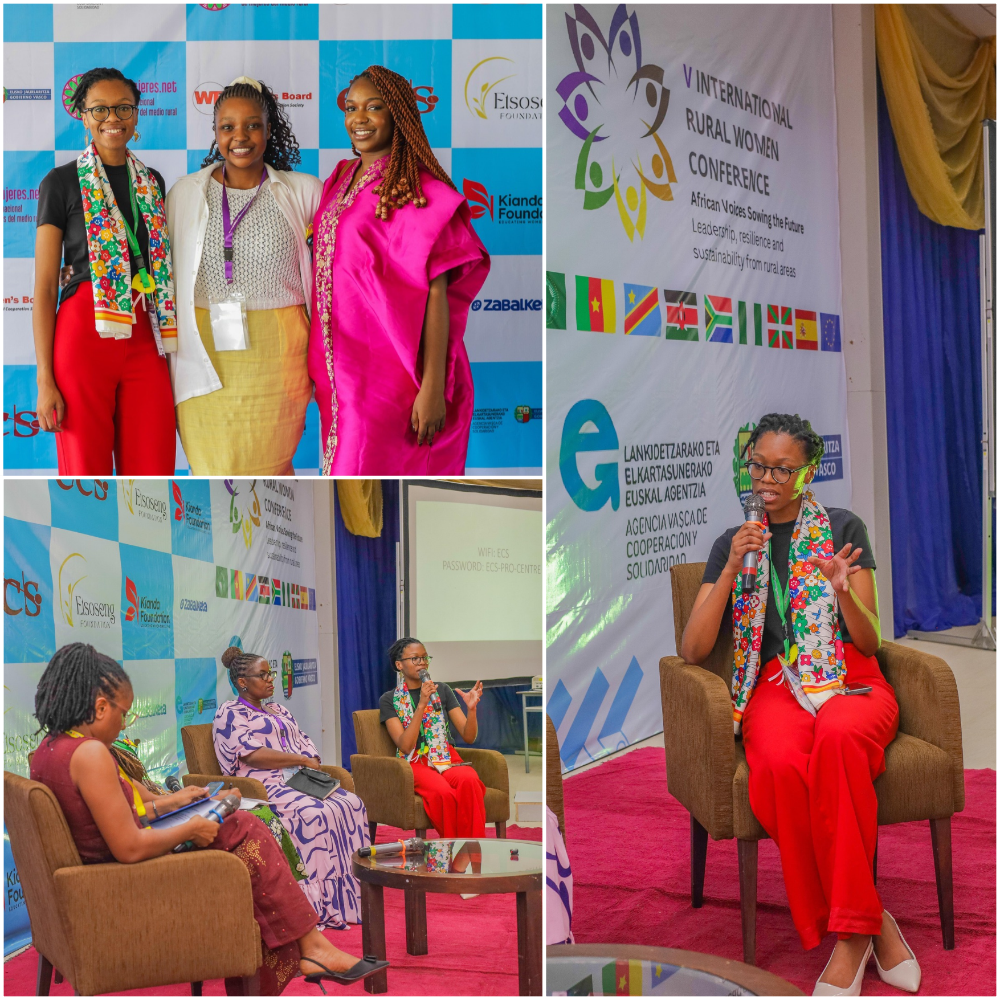
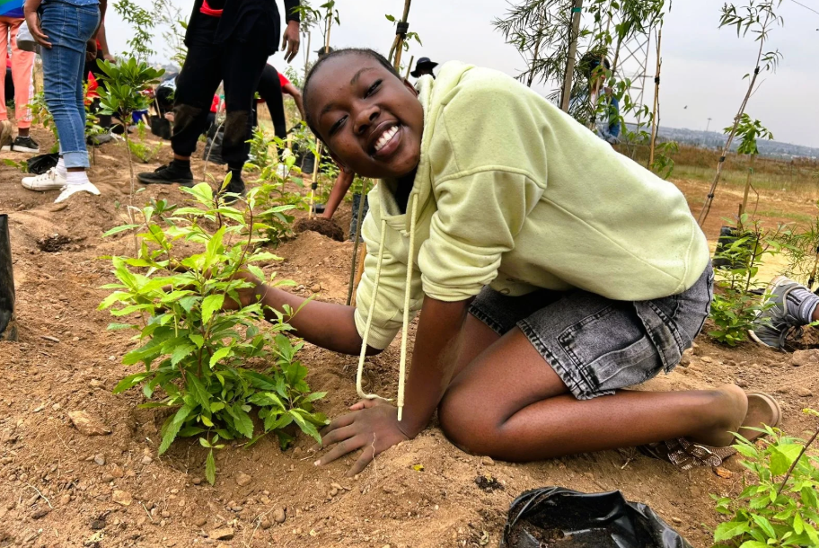
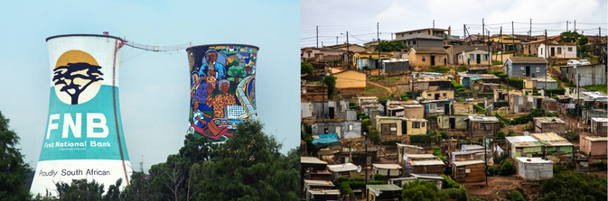

Empower through opportunity
Open up access to learning, mentorship, visibility, and practical support.
NGO and women empowerment
This work is in partnership with Etsoseng Foundation centered on practical empowerment: building confidence, access, and opportunity through community-driven programmes, partnerships, and spaces where women and girls can grow.
My Mission
My mission is to create meaningful pathways for girls and young women by supporting their growth, amplifying their self-esteem and confidence, and helping build environments where they can participate fully and lead confidently.
Open up access to learning, mentorship, visibility, and practical support.
Keep the work local, relational, and informed by the realities of Alexandra and Soweto.
Support women and girls in ways that strengthen agency, leadership, and self-belief.
Featured In
Nigeria, March 2026

Social Development Projects | Women Empowerment | Climate Responsibility Education
Felile contributed to a panel discussion on Climate Change, Sustainability and Female Resilience.
A key part of the discussion focused on the challenges young women face in engaging with climate
action.
One of the main barriers identified was a lack of awareness about how directly environmental issues
affect daily life. In many communities, young women are often focused on immediate priorities such as
completing school, securing employment, and supporting their families. In this context, environmental
action can feel distant or secondary.
However, the panel emphasised that climate change is already deeply connected to these basic
needs.
For example, limited green space and high population density contribute to the creation of urban heat
islands, where temperatures are significantly higher due to concrete infrastructure and lack of
vegetation. This impacts health, increases vulnerability to extreme weather, and limits opportunities for
small-scale food production. Additionally, flooding can damage informal housing and disrupt
livelihoods.
Another challenge discussed was that many young women do not see themselves as active
participants in climate solutions, often perceiving environmental work as the domain of experts,
governments, or large organisations
Building a Model for Female Climate Resilience
Looking ahead, the panel highlighted the importance of developing community-based models that
combine climate adaptation and climate mitigation.
Adaptation refers to how communities respond to the impacts of climate change that are already
being experienced — such as extreme heat, flooding, and food insecurity. In many African contexts,
women are already at the forefront of these responses through their roles in households and
communities.
Mitigation, on the other hand, focuses on long-term environmental solutions, including restoring
ecosystems and reducing future climate risks.
A promising approach lies in integrating both adaptation and mitigation within community
initiatives.
An example discussed was the Ithuba Unity Forest, developed through Etsoseng Foundation in
partnership with SUGi Project. Such projects contribute to mitigation by restoring biodiversity and
creating green spaces that reduce urban heat. At the same time, they support adaptation by improving
local environmental conditions, enabling small-scale food production, and creating spaces for learning
and community engagement.
What makes these models particularly effective is the active involvement of women and girls — not
only as beneficiaries, but as planners, participants, and stewards of these initiatives.
South Africa, January 2026

Project Coordination | Community Engagement | Youth Empowerment | Environmental Sustainability
I coordinated the development of the Ithuba Unity Forest, a youth-led environmental project that brought together girls from Ithubelisha in Alexandra and learners from Bona Comprehensive School in Soweto to create a pocket forest.
The project began with a challenge: the original site in Alexandra was too small to meet the requirements for establishing a pocket forest. Rather than allowing this to stop the initiative, I helped coordinate a new approach, engaging schools across Johannesburg until we identified Bona Comprehensive School as a suitable partner. This transformed a logistical setback into an opportunity to build collaboration between two township communities.
Over five months, I worked alongside project partners, including SUGi and Mzanzi Organics, while ensuring that the Ithubelisha girls remained actively involved in the process. The girls contributed to the vision and story of the forest, participated in creative brainstorming sessions, and ultimately named it Ithuba Unity Forest, meaning opportunity. They then joined Bona learners in planting the trees.
A key outcome of the project was the shift in how the girls viewed themselves—not simply as beneficiaries of programmes, but as contributors and changemakers capable of giving back to their communities. The participatory approach gave them opportunities to practise leadership, creativity, collaboration and decision-making in a real-world setting.
For Ithubelisha, the project also became an opportunity to expand beyond its usual programme activities, build new organisational relationships and reflect on how character-building and leadership development can be strengthened through practical experiences.
The resulting forest represents more than environmental restoration. It is a living example of youth leadership, cross-community collaboration and the potential that exists within township communities. Through the project, approximately 600 indigenous trees were planted, creating a space that can serve as a living classroom, community resource and lasting symbol of opportunity.
Major projects

Most of the work is rooted in Alexandra and Soweto, with each project designed to be practical, collaborative, and responsive to community needs.
Alexandra
iThubelisha is an isiZulu word meaning “new beginnings”. The iThubelisha programme aims to provide young girls between the ages of 9 to 17 years with “new beginnings” by helping them confront life’s challenges with hope for the future.
Learn more...
Soweto
Work focused on offering mentorship and accompanying grade 7 girls in Soweto through their transition to high school, helping them navigate challenges and build confidence.
Cross-community
Campaigns and collaborative efforts that bring together communities, partners, and shared resources to strengthen visibility and impact for women-focused work.
Connect and collaborate
If you want to support community work, partner on women empowerment initiatives, sponsor programmes, or collaborate on events, this is the place to start.
Work together on outreach, workshops, activations, and sustained community initiatives.
Contribute funding, expertise, venues, equipment, or strategic support for the work.
Reach out to discuss a collaboration, invite, speaking opportunity, or community partnership.